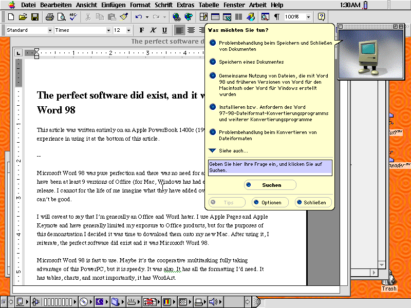
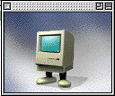

The perfect software did exist, and it was Microsoft Word 98
January 16th, 2026
This article was written entirely on an Apple PowerBook 1400c (1996) using Microsoft Word 98. You can read my experience in using this machine at the bottom of this article.
--

Command + Shift + 3 works to take screenshots in Mac OS 8.6 too!
Microsoft Word 98 was pure perfection and there was no need for any versions after it. There have been at least 9 versions of Office (for Mac, Windows has had even more) since the release. I cannot for the life of me imagine what they have added over the last 30 years, but it can’t be good.
I will caveat to say that I’m generally an Office and Word hater. I use Apple Pages and Apple Keynote and have generally limited my exposure to Office products for my own sanity, but for the purposes of this demonstration I decided it was time to download them onto my new Mac. After using it, I reiterate, the perfect software did exist and it was Microsoft Word 98.
Microsoft Word 98 is fast to use. Maybe it’s the cooperative multitasking fully taking advantage of this 133MHz PowerPC 603e, but it is speedy. It was also born in 1998, around the same time as me, which in my opinion, was one of the best times to be born. It has all the formatting I’d need. It has tables, charts, and most importantly, it has WordArt.
And honestly, it handles image formatting better than modern Word.

Little Mac
It also has Little Mac (Clippy, but on Word 98 he’s a very cute little Macintosh with feet), whom I have really gotten to know and love. While I don’t understand him because he speaks German (see, German Surprise - look even hyperlinks work!), our love crosses all boundaries. Truly though, having him hovering over my screen doing random activities, falling asleep, showing me physically saving my files, yelling something German at me with an exclaimed face (literally) made writing feel better somehow. It made it feel like we were writing together, like there was a friendly presence always there. There’s something more to explore there- a friendly assistant that just sits with you. Occasionally when he’d fall asleep I’d click to wake him up, to feel something, and he’d be so happy to see me and ask ‘Was mochten Sie tun?’, whatever that means. Sometimes, what seemed like randomly, he would entirely block me from using the interface and writing, asking me to answer a multi-choice question before I could continue. My palms would get sweaty, the stakes felt high- is he going to nuke all my work if I answer incorrectly? I don’t know if it’s Stockholm syndrome, but I really felt a sense of gratitude when he’d let me go, doing a little dance to show I got the right answer. I don’t think I can live write without him anymore.
I should go outside.